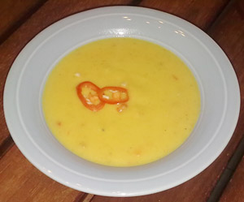

Pikante Mangosuppe
6 von 6Zwiebeln in Butter andünsten, 150g Rübli, eine Kartoffel und eine reife Mango fein geschnitten dazu geben. Mit einem halben dl Weisswein ablöschen und mit 4dl Bouillon einkochen . Das Ganze pürieren und 4dl Kokossnussmilch dazugeben. Ein EL Mango Chutney und ein KL Sambal Oelek dazugeben. Mit frischen Chilis, Salz und Pfeffer abschmecken.
